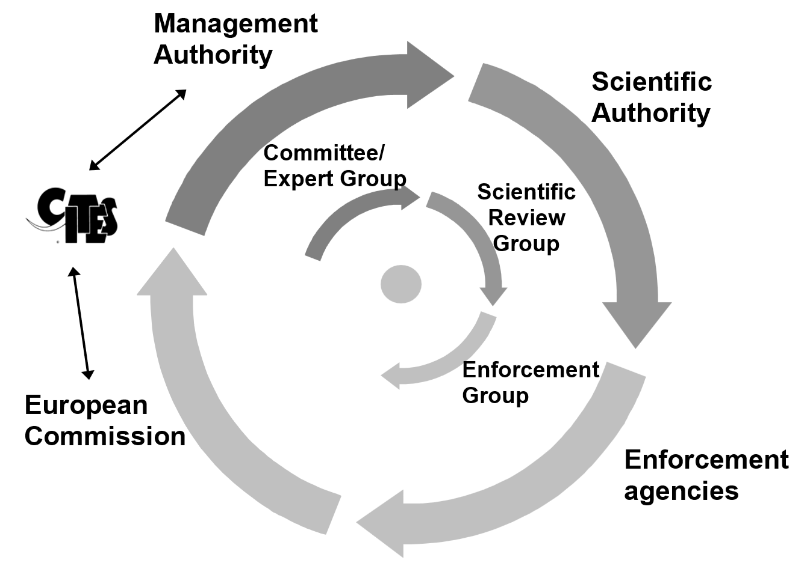

11.1 How are duties organised at the national level?
11.1.1 Management Authority structure and function
The complexity of the Regulations and the workload involved in ensuring their proper implementation and enforcement requires an adequately staffed and equipped Management Authority. Its work is clearly not limited to the issue of permits and certificates, although this aspect may absorb a significant part of the available human resources. The joint development of systems for computerised issuance of documents, production of Annual Reports and electronic means of communication between the Management Authorities and the many other actors involved in implementation and enforcement of the Regulations and CITES should be a clearly established priority.
CITES Resolution Conf. 18.6 on the Designation and role of Management Authorities (see https://www.cites.org/sites/default/files/document/E-Res-18-06.pdf) further contains useful recommendations on the tasks to be carried out by the Management Authority under the Convention.
Each Member State must designate at least one Management Authority, which will have primary responsibility for the implementation of the Regulations and for communication with the Commission1. A representative of the primary Management Authority also represents his or her Member State in the Committee on Trade in Wild Fauna and Flora (“the Committee”) and in the CITES Expert Group at the EU level, which meet 3-4 times per year (see Section 11.2.1 and Figure 16). Member States may also include experts in particular sectors in their Management Authorities (e.g. fisheries or timber experts) if they find this useful.
Additional Management Authorities and other authorities competent to assist in implementation may be designated, in which case the primary Management Authority will be responsible for providing them with all information necessary for a correct application of the Regulation2. Representatives of additional authorities may attend Committee meetings.
The contact details of the primary Management Authorities of the Member States are available on the website of the CITES Secretariat.
11.1.2 Scientific Authority structure and function
Each Member State must designate at least one Scientific Authority which must have appropriate qualifications and for which duties must be separate from those of any designated Management Authority3. At least one representative of the Scientific Authority also represents his or her Member State in the Scientific Review Group (Figure 16), depending on the agenda and the expertise required to ensure a proper scientific input (see Section 11.2.2)4. Member States may also include experts from particular sectors in their Scientific Authorities (for example, fisheries or timber experts) if they find this useful.
Member States may have additional Scientific Authorities, or as is the case in several Member States, have one for animals and one for plants. There are also Member States where the Scientific Authority consists of a committee of scientists from various scientific institutions. In that case the existence of a permanent secretariat would appear to be essential in order to ensure proper co-ordination and a fixed partner for dialogue with the Commission and the Scientific Authorities of the other Member States.
The absence of a properly designated and notified Scientific Authority may lead third countries to refuse imports – see CITES Resolution Conf. 10.3: Designation and role of Scientific Authorities. This Resolution further contains useful recommendations on the tasks to be carried out by the Scientific Authority under the Convention.
It is, however, important to note that the Regulations – and Article 4 of Regulation (EC) No 338/97 in particular – contain a large number of additional tasks to be carried out by the Scientific Authorities (see Annex XII of this Guide). The most significant example is the need for Scientific Authorities to be able to provide the Management Authority with advice on the conservation aspects regarding potential imports of over 30 000 plant and animal species.
11.1.3 What about Enforcement Authorities?
Normally there are several authorities in each EU Member State that are responsible for the enforcement and monitoring of the compliance with the provisions of the Regulations, including Customs, police and environmental inspection services. These authorities must take the appropriate steps to ensure compliance or to instigate legal action if they have reason to believe that provisions are being infringed5.
Regulation (EC) No 338/97 establishes an Enforcement Group consisting of representatives of each of the Member State’s authorities that have responsibility for monitoring compliance with the Regulations, such as Customs, Police and Wildlife Inspectorates. The Group is chaired by the European Commission and meets on average twice a year. For further details regarding the role of the Enforcement Group, see Section 11.2.3 below.
11.2 Which bodies operate at EU level?
Figure 16: EU-level bodies for CITES implementation

11.2.1 What is the role of the Committee and the Expert Group?
Article 18 of Regulation (EC) No 338/97 establishes a Committee on Trade in Wild Fauna and Flora that consists of representatives of Member States’ competent authorities (usually these would be the Management Authorities) and is chaired by a representative of the Commission. As of 2015, a division was made between the Committee on Trade in Wild Fauna and Flora (“Management Committee”) and the Group of Experts of the Competent CITES Management Authorities (“Expert Group”).
The role of the Committee is the elaboration and adoption of draft implementing acts as well acts adopted via the regulatory procedure with scrutiny, pursuant to Article 19 of Regulation (EC) No 338/97 – commonly referred to as “Comitology”. All other matters related to the EU Wildlife Trade Regulations, the Convention, and their implementation are tasks for the Expert Group, which is composed of the same delegates as the Committee. Generally, both meetings are held back-to-back and are organised three to four times a year in Brussels. The meeting agenda and summaries can be obtained from the CIRCABC repository for the Committee and Register of Commission expert groups6 for the Expert Group on CITES..
Many of the Articles of Regulation (EC) No 338/97 refer to implementation issues and, in particular, to measures to be adopted by the Commission as Commission Regulations in accordance with a regulatory procedure in which it is assisted by the Committee – known as “Comitology”. These include:
amendments to the Annexes (other than amendments to Annex A that do not arise from amendments to Appendix I of the Convention);
changes in the detailed implementation rules (regarding issuance of documents, derogations, marking, etc.), and
prohibition of imports of certain species from certain countries.
Proposals for such measures require a positive opinion from the Committee, established by a qualified majority, before they can be adopted by the Commission.
11.2.2 What is the role of the Scientific Review Group?
Article 17 of Regulation (EC) No 338/97 establishes a Scientific Review Group (SRG) that consists of representatives of each Member State Scientific Authority and is chaired by a representative of the Commission. The SRG meets three to four times a year in Brussels and examines all scientific questions related to the application of the EU Wildlife Trade Regulations. It also assesses whether trade has a harmful effect on the conservation status of species. The meeting agenda and summaries can be obtained from the European Commission’s Register of Commission Expert Groups.
The SRG can also form opinions on whether or not imports of certain species from a particular country of origin comply with the conditions set out in the Regulations (see Section 3.3.9). In cases where an import restriction is established by the Commission7 based on the advice of the SRG, import of the particular specimens from a certain country of origin will not be allowed. Opinions of the SRG are to be conveyed to the Committee by the Commission.
11.2.3 What is the role of the Enforcement Group?
Article 14(3) of Regulation (EC) No 338/97 establishes the Enforcement Group that consists of representatives of Member States authorities in charge of wildlife trade controls (e.g. Customs, police services and environmental inspectorates) and is chaired by a representative of the Commission. Representatives of other relevant EU and international bodies and organisations (Europol, Interpol, CITES Secretariat etc.) also participate in meetings of the Group. The Enforcement Group meets on average twice a year. While the Enforcement Group does not adopt formal Opinions in the same way as the SRG does, the outcomes of its deliberations are also conveyed to the Committee by the Commission.
The task of the group is to monitor enforcement policy and practice in the EU Member States and make recommendations to improve the enforcement of wildlife trade legislation. It also catalyses the exchange of information, experience and expertise on wildlife trade control related topics between the Member States (trends in illegal trade, significant seizures and investigations), including sharing of intelligence information and establishing and maintaining databases. The Enforcement Group also plays an important role in promoting and monitoring the implementation of the EU Wildlife Action Plan.
11.2.4 What is the role of the European Commission?
The European Commission monitors the implementation of the EU Wildlife Trade Regulations in co-operation with the Member States. One of the main roles of the Commission is to prepare proposals for amendments to EU CITES legislation and to adopt implementing measures. Representatives of the Commission chair the meetings of the Committee, the Expert Group, the Scientific Review Group and the Enforcement Group. The Commission facilitates communication between Member States and also communicates with third parties, in particular where mandated to do so by any of the above-mentioned groups. The Commission ensures that the EU Member States act on the basis of a common position at meetings of the CITES Conference of the Parties.
-
Article 13(1) *Regulation** (EC) No 338/97. *A similar requirement exists under CITES, and concerns communication with the CITES Secretariat and the Parties to the Convention. ↩
-
Article 13(1)(b) Regulation (EC) No 338/97 ↩
-
Article 13(2) Regulation (EC) No 338/97 ↩
-
Article 17 Regulation (EC) No 338/97 ↩
-
Article 14(1) Regulation (EC) No 338/97 ↩
-
Register of Commission expert groups and other similar entities (europa.eu) ↩
-
And in accordance with the procedure laid down in Article 18 of Regulation (EC) No 338/97 (Article 4(6) Regulation (EC) No 338/97) ↩